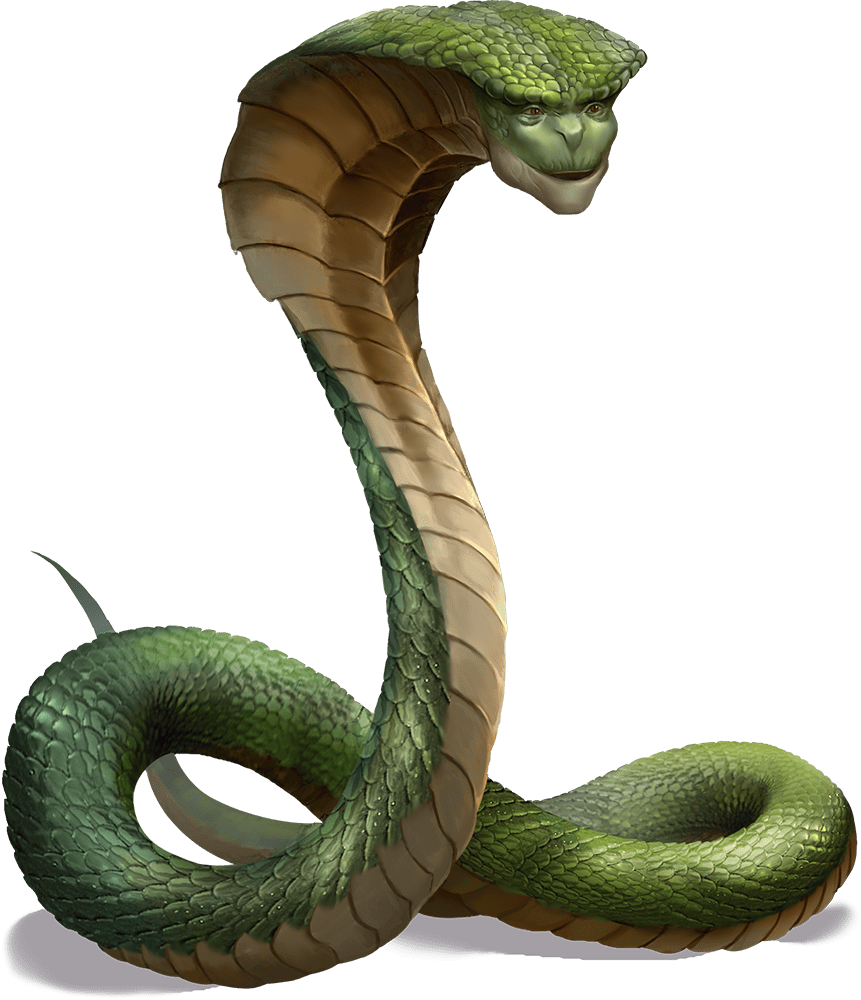

Eleventh Session
Undead and Guardians
Summerday +363 hours
Dramatis Personae
- Actias Aureus, a 5th-level Tiefling Warlock
- Benjamin, a 6th-level Wood Elf Ranger
- Calmul Rhoqiroth, a 5th-level Dragonborn Artificer
- CoralKing, a 6th-level Gnome Monk
- Geral Bryn, a 5th-level Human Fighter
- Orky, a 6th-level Half-Elf Paladin
- Steve, a 6th-level Halfling Rogue
- Tasbros, a 5th-level Sky Elf Sorcerer
- Tysnera, a 5th-level Sky Elf Wizard
- Viker, a 6th-level Eladrin Druid
- Wulrif, a 5th-level Human Warlock
From the journal of Dame Orky
Six cracked marble pillars line the walls of this hall, at the north end of which stands a nine-foot-tall statue of a Dwarf seated on a throne, a mighty stone Warhammer across his lap. Large emeralds gleam in the statue’s eyes.
We have tied and gagged the Wizard and the Drow. Gundren brings in a shield for us that has an eye on it, which turns out to be a Shield of Alertness. Geral takes it.
Tysnera casts Ritual Identify on the objects. Wulrif shuts the door and locks it, I guard it. Wulrif hears a voice in his head “Can you take the gag off? You don’t have to worry about me.” He angrily casts a cantrip on the prisoner and tells him to speak out loud. He rips out the gag. The Drow threatens us to talk to him now or he will hunt us down and kill us, then haunt us forever. Wulrif puts the gag back on. Actias uses Mage Hand to retrieve a key from around the Drow's neck.
Actias and Wulrif investigate the statue and find the emeralds are fake. Tasbros casts Detect Magic and finds Abjuration magic on the statue. Geral asks Gundren if the statue is made by Dwarves. He confirms that it is and that the gems are fake. Gundren walks over to the table to read the notes on it. He finds a Potion of Healing and Viker takes it. Gundren thinks Sildar would want the two hostages returned to Phandalin to stand trial.
Gundren starts walking towards the second door that seems to be locked. “Does anyone have a key?” Wulrif exclaims that he found a key just now and walks over to unlock the door but hesitates as we need to explore the room further.
Wulrif decides to interrogate Iarno about Gundren’s brother. Wulrif tells him to speak or we will cut his hand off. He finally concedes that his brother is in the other room. Viker turns into a fly to investigate. She sees a bound Dwarf in there with some other stuff. She returns and relays the information to us.
I, Tasbros, and Tysnera go clear the rest of the room. We find maps of the cave and vague directions of where the spell forge is. We find a bunch of treasure and a mug. We give the treasure to Gundren to hold onto until we get back.
Everyone else opens the door and Gundren rushes in to the Dwarf. He needs to be healed so we give the potion to him. Gundren told us about a room full of Undead with one door. He tells us of a cellar we can retreat to for protection. We start figuring out where the Undead are and sense we are probably being closed in on. We strategize about which way to move through the caves toward the spell forge.
We march on through the bugbear room we cleared earlier…
A blast furnace and a mechanical bellows powered by a waterwheel dominate this large chamber. The furnace is cold and dark, but heaps of coal are piled nearby, along with carts full of unrefined ore. The waterwheel sits in a ten-foot-wide channel cut into the floor of the room, but the channel is dry. Passages exit to the west, south, and east. The empty channel exits to the north and east.
More than a dozen withered corpses are scattered around the room. These slain Dwarves and orcs are still wearing the remnants of their armor. Floating above them is a skull engulfed in green flame. A rotting eyeball creature rises to attack, as do the fallen warriors.


Round 1
- Benjamin shoots the skull with his bow. He damages it.
- The flaming skull shoots a Fireball but Wulrif uses Counterspell and stops it.
- Geral tells our Ranger to shoot the fire skull again and does 18 points of damage.
- Tysnera uses Magic Missile on the flaming skill. Unusually, the Magic Missiles bounce off.
- A Fireball comes out and we all make Saving Throws, 19 HP damage on success. So, Tasbros fails and takes 35 HP damage.
- Actias casts Hellish Rebuke on the Flaming Skull. He casts Eldritch Blast on the Flaming Skull twice and drops it. He moves to target the black, mysterious cloud.
- Steve shoots the Beholder and does 15 damage.
- Viker uses her Unicorn Spirit Totem which gives 6 HP to everyone. She heals Tysnera 16.
- CoralKing runs through the pack and attacks the nearest large Undead with 3 attacks. 2 hits and does 20 damage.
- Tasbros uses Fireball and does 34 damage to everything in the room. It kills 8 of the small Undead.
- Wulrif misses an attack.
- The enemies move in and attack Geral twice. They try to hit me twice but miss twice. They hit CoralKing a lot. He uses Fade Away to avoid further damage. He still takes 10 HP more damage.
- I hit for 38 damage.
- The Beholder can see me, but I make my Saving Throw against Paralysis.
- Calmul shoots at the damaged Undead and does enough damage to drop it! His Steel Defender attacks now and bites one of the Undead.
Round 2
- Benjamin shot the Beholder thing for 20+ damage.
- Geral asks Benjamin to hit the Beholder thing again for 15 damage and it goes down!
- Tysnera uses Fireball, sparing CoralKing, and does 29 damage, but doesn’t drop anything.
- There is a Lightning Bolt that comes out of nowhere, but Wulrif miraculously manages to Counterspell it.
- Actias moves up and casts Bane on 4 Undead.
- Steve uses a Sneak Attack on the Undead Calmul’s fox bit. He does 22 damage.
- Viker heals everyone 6 HP.
- CoralKing runs up to the Wizard, while invisible, and rolls a crit! He uses his magic Ki points and does 16 damage. He hits twice again and does 18 damage. The Wizard gets wrecked and disappears!
- Tasbros uses Scorching Ray and hits 1 Undead. He does 8 damage.
- Wulrif uses Eldritch Blast on an Undead and does 32 damage.
- The Undead shoves Geral back, and everyone behind him. Tasbros gets pushed down. I get attacked, but Calmul’s Defender protects me. The Undead attack the Defender and destroy it.
- I hit one for 19 and drop it. Then I smite the one in front of me and do 35 to drop it.
- Calmul's musket misfires.
Round 3
- Benjamin shoots for 17 HP.
- Geral steps forward and attacks an Undead twice and shamelessly fails. He’s tired.
- Tysnera casts something and knocks 2 Undead over.
- Actias uses Eldritch Blast and drops one of them prone.
- Steve hides.
- Viker heals everyone for 6HP and then CoralKing for 17.
- CoralKing does 6 damage on one Undead.
- Tasbros casts Mind Sliver and fails.
- Wulrif blasts the hexed Undead by 28 HP and drops it.
- An Undead tries to push me back and but I'm too strong. Another hits Geral twice and gets 29 damage.
- I hit one Undead for 19 damage.
- Calmul shoots one and does 8 damage, shoots again for 6 damage.
Round 4
- Benjamin does 24 damage on the most damaged Undead.
- Geral shoots the damaged one again and does 20 damage, dropping it! Geral uses a bonus action to heal himself.
- Tysnera casts Firebolt and fails; she is also tired.
- Actias casts Phantasmal Force, but the Undead are immune to it.
- Steve hits one of the Undead for 31 damage.
- Viker heals Geral for 26 HP
- CoralKing runs up behind one of the Undead and hits one for 21 damage.
- Tasbros hits the damaged Undead with a Firebolt for 14 damage.
- Wulrif transports behind one of the Undead, shoving it into a wall. He drops it.
- The last Undead attacks Geral and hits him for 35 HP.
- I hit the remaining Undead for 19 damage.
- Calmul shoots at the last one and misses.
Round 5
- Benjamin shoots at the last one twice and hits it for 27 damage, killing it!
Benjamin casts Healing Spirit and Viker heals Geral and everyone else. We find nothing else in this room beside exits and magic in the northeast corner. Calmul heals his Steel Defender. We decide to attune the staffs we have, using a short rest. We exit this room via the northeast corridor.
"Welcome," says a voice belonging to a large, hooded, snakelike creature with a strangely friendly face.
"Thank you," says Tysnera. She senses its nature. "We are tired and in need of rest -- will you protect us?"
"Yes, of course," it replies. "Congratulations on defeating all of those Undead. Well, most of them anyway -- the vengeful spirit of the Wizard will be back in a few cycles."
Gundren steps forward. "We have the deed to Phandelver Mine." He presents an ornately written scroll from the Neverwinter Archives.
"I care not for such things, only that the hearts of those who would wield the power of the Spell Forge are true." Its head sways from side to side as it examines the party in minute detail. "You must leave at once," it says to Wulrif.
Wulrif doesn't argue.
"You need the combined knowledge of an Artificer and a Wizard," it continues.
"We have," replies Geral.
"Those that use the Spell Forge, I must lay a Geas upon them. On their heads be it if a weapon made in the Spell Forge is used for evil purposes."
"I accept," says Tysnera.
Calmul makes a strange growling noise in his throat.
"I do not," he finally says.
"Then you must also leave," replies the Guardian.
"Now," it says once Calmul has gone, "let me teach you the secrets of the Spell Forge. I have but a few centuries."
Tysnera and the Guardian confer at length while the rest of the party takes a long rest.
Tysnera learns that the Spell Forge can bind the following spells to weapons permanently:
Geral is singled out and asked to bring this mine back into operation and protect the mine. He is asking to be replaced for a short period of time. Geral said he needs to arrange a small militia to do that and agrees.
Steve found some magic gauntlets on the corpse of a Dwarf, which Tysnera identifies as Gauntlets of Ogre Power. Geral takes them.
5,000 XP